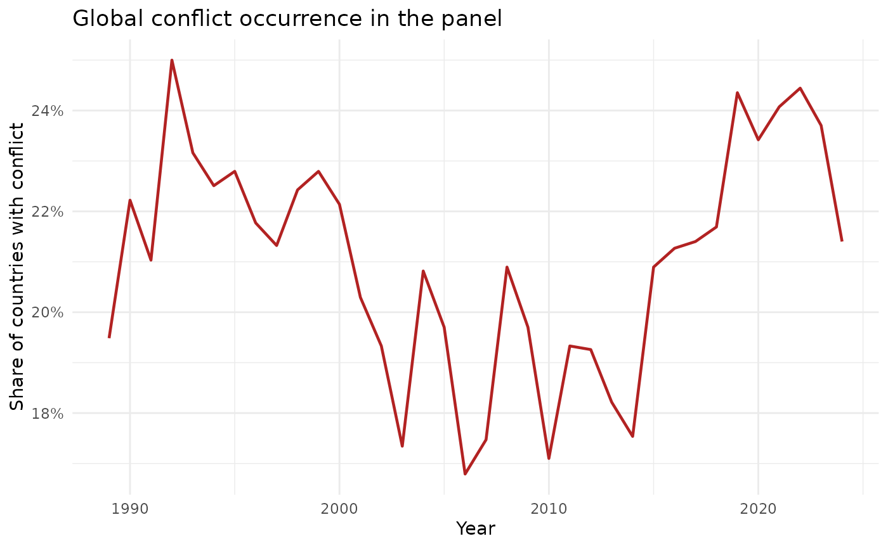

Conflict, vaccination, and outbreaks
Source:vignettes/conflict_outbreaks.Rmd
conflict_outbreaks.RmdThis vignette demonstrates how to extend the core measles panel with conflict exposure indicators and test whether conflict predicts:
- next-year outbreak occurrence,
- changes in vaccine coverage,
- changes in measles case burden.
The full workflow runs in R and uses the package’s bundled fixture data.
1) Build a panel with conflict indicators
library(vpdsus)
library(dplyr)
#>
#> Attaching package: 'dplyr'
#> The following objects are masked from 'package:stats':
#>
#> filter, lag
#> The following objects are masked from 'package:base':
#>
#> intersect, setdiff, setequal, union
library(ggplot2)
panel <- vpdsus_example_panel()
conf <- get_conflict(
years = sort(unique(panel$year)),
countries = unique(panel$iso3),
source = "ucdp_fixture"
)
panel_conf <- merge_conflict_with_panel(panel, conf)
dplyr::summarise(
panel_conf,
n_rows = dplyr::n(),
n_countries = dplyr::n_distinct(iso3),
year_min = min(year, na.rm = TRUE),
year_max = max(year, na.rm = TRUE),
share_any_conflict = mean(conflict_any_event, na.rm = TRUE),
mean_fatalities_per_100k = mean(conflict_fatalities_per_100k, na.rm = TRUE)
)
#> # A tibble: 1 × 6
#> n_rows n_countries year_min year_max share_any_conflict mean_fatalities_per_…¹
#> <int> <int> <int> <int> <dbl> <dbl>
#> 1 17419 272 1960 2024 0.210 2.98
#> # ℹ abbreviated name: ¹mean_fatalities_per_100kConflict predictors used in this vignette:
-
conflict_any_event: discrete indicator (0/1). -
conflict_fatalities_per_100k: continuous intensity indicator.
2) Prepare lagged modelling data
conf_mod <- make_conflict_modelling_panel(
panel_conf,
lag_years = 1,
outcome = "outbreak_pc",
require_conflict_available = TRUE
)
dplyr::glimpse(conf_mod)
#> Rows: 6,487
#> Columns: 13
#> $ iso3 <chr> "ABW", "ABW", "ABW", "ABW", "ABW", "ABW",…
#> $ year <int> 2016, 2017, 2018, 2020, 2021, 2023, 1989,…
#> $ year_next <dbl> 2017, 2018, 2019, 2021, 2022, 2024, 1990,…
#> $ who_region <chr> "LCN", "LCN", "LCN", "LCN", "LCN", "LCN",…
#> $ outcome <int> 0, 0, 0, 0, 0, 0, 1, 0, 1, 1, 1, 1, 1, 0,…
#> $ cases <dbl> NA, 0, 0, NA, 0, NA, 1170, 1609, NA, 2205…
#> $ cases_next <dbl> 0, 0, 1, 0, 0, 0, 1609, 792, 2205, 3609, …
#> $ coverage <dbl> NA, NA, NA, NA, NA, NA, NA, NA, NA, NA, N…
#> $ coverage_next <dbl> NA, NA, NA, NA, NA, NA, NA, NA, NA, NA, 0…
#> $ delta_log_cases <dbl> NA, 0.00000000, 0.69314718, NA, 0.0000000…
#> $ delta_coverage <dbl> NA, NA, NA, NA, NA, NA, NA, NA, NA, NA, N…
#> $ conflict_any_event <dbl> 0, 0, 0, 0, 0, 0, 1, 1, 1, 1, 1, 1, 1, 1,…
#> $ conflict_fatalities_per_100k <dbl> 0.000000, 0.000000, 0.000000, 0.000000, 0…The modelling panel aligns year t predictors with year
t + 1 outcomes.
3) Fit conflict-effect models
fit_conf <- fit_conflict_effect_models(conf_mod)
fit_conf$coefficients |>
dplyr::filter(grepl("^conflict_", term)) |>
dplyr::arrange(model, term)
#> # A tibble: 6 × 6
#> model term estimate std_error statistic p_value
#> <chr> <chr> <dbl> <dbl> <dbl> <dbl>
#> 1 delta_coverage_lm conflict_any_event -6.46e-3 0.00192 -3.37 7.71e-4
#> 2 delta_coverage_lm conflict_fatalities_p… -1.86e-5 0.0000601 -0.309 7.57e-1
#> 3 delta_log_cases_lm conflict_any_event 4.60e-2 0.0698 0.659 5.10e-1
#> 4 delta_log_cases_lm conflict_fatalities_p… 3.09e-4 0.00215 0.143 8.86e-1
#> 5 outbreak_logit conflict_any_event 4.27e-1 0.119 3.57 3.52e-4
#> 6 outbreak_logit conflict_fatalities_p… -3.65e-3 0.00413 -0.886 3.76e-1Model outputs include:
-
model_outbreak: logistic model for next-year outbreak occurrence. -
model_delta_coverage: linear model for next-year coverage change. -
model_delta_cases: linear model for next-year change in log cases.
4) Visualise conflict exposure over time
conf_ts <- panel_conf |>
dplyr::filter(conflict_data_available) |>
dplyr::group_by(year) |>
dplyr::summarise(
any_conflict_share = mean(conflict_any_event, na.rm = TRUE),
mean_fatalities_per_100k = mean(conflict_fatalities_per_100k, na.rm = TRUE),
.groups = "drop"
)
ggplot(conf_ts, aes(x = year, y = any_conflict_share)) +
geom_line(linewidth = 0.8, colour = "#B22222") +
scale_y_continuous(labels = scales::percent_format(accuracy = 1)) +
labs(
x = "Year",
y = "Share of countries with conflict",
title = "Global conflict occurrence in the panel"
) +
theme_minimal(base_size = 11)